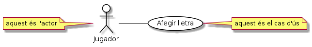

Casos d'ús
Fins el moment, hem obtingut un DGC a partir dels requeriments: Hem vist com, a partir d'una primera descripció dels requeriments en disposem d'un DGC amb els actors principals i les dades que s'intercanvien.
A continuació pot ser necessari obtenir una ampliació de requeriments: Han sortit dubtes que hem pogut demanar al client amb els que hem ampliat el coneixement de l'aplicació a crear.
Un cop tenim una bona idea dels requeriments, hem de passar a extreure les funcionalitats a implementar. Per fer-ho, trossegem els requeriments en parts fent servir una eina anomenada Casos d'ús.
Un cas d'ús es defineix com un comportament de l'aplicació complet, iniciat per un actor, que aporta un valor a l'actor.
Els casos d'ús defineixen un objectiu d'un actor. Per exemple,
Afegir lletra: el jugador afegeix una lletra al joc el Penjat
Comprovar disponibilitat: el client comprova la disponibilitat d'un tipus de vehícle en unes dates a l'aplicació de de lloguers de vehicles
Fixa't que el nom dels casos d'ús sol ser format per un verb. Lògic si tenim en comptes que representen accions o comportaments de l'aplicació.
Cal tenir present que no serien objectius totes les interaccions que pugui fer l'actor amb l'aplicació. Per exemple, tot i que el client haurà d'indicar les dates en les que vol llogar el vehicle, el seu objectiu és conèixer la disponibilitat i no especificar dates.
Per altra banda, cada cas d'ús hauria de representar un únic objectiu. Una pista per saber si fem de més: noms de cas d'ús de l'estil comprovar disponibilitat **i* fer reserva*. Aquest el descomposaríem en dos.
Els casos d'ús permeten descriure el sistema a desenvolupar de manera que ens poguem posar d'acord amb els nostres clients. Un cop estiguem d'acord amb els casos d'ús, ja podrem començar a desenvolupar l'aplicació que haurà de respectar els casos acordats.
Com a bonus, un cop tenim els casos d'ús, ja podem començar a definir els casos de test, és a dir, les maneres amb les que verificarem que l'aplicació, que encara no hem construït (!), respecta els requeriments dels nostres clients.
UML disposa d'una notació gràfica per expressar els casos d'ús.
Per exemple, a l'aplicació del Penjat, podriem representar el cas d'ús en que el jugador afegeix una nova lletra, de la següent manera:

En breu:
els actors --especialment si són humans-- es solen representar amb un ninot
els casos d'ús es solen representar amb el text que els descriu dins d'un oval
una línia indica la relació entre l'actor i el cas d'ús
Per cada cas d'ús tindrem:
l'actor que l'inicia. També actor principal o iniciador
Per exemple, el client que vol consultar la disponibilitat del vehicle és qui inicia l'acció
opcionalment, altres actors
Per exemple, quan el client vol formalitzar la reserva i introdueix les seves dades de pagament (targeta de crèdit), un actor secundari és el sistema d'autorització de targetes de crèdit. Aquest actor serà consultat per l'aplicació durant l'evolució del cas d'ús de reserva de vehicle.
Un cop iniciat un cas d'ús, l'aplicació realitzarà les passes necessàries per intentar satisfer l'objectiu de l'actor principal.

Podem representar els diferents casos d'ús de l'aplicació de lloguers de vehicles, tot agrupant-los dins d'un rectangle.
![@startuml
left to right direction
skinparam usecase {
BackgroundColor white
BorderColor black
ArrowColor black
}
skinparam actor {
BackgroundColor white
BorderColor black
ArrowColor black
}
skinparam packageStyle rectangle
actor Client
rectangle Banc as BANC <<actor>>
rectangle "Lloguer de vehicle" as APP {
usecase "Comprovar disponibilitat" as (CHECK)
usecase "Reservar vehicle" as (RESERVE)
usecase "Cancel·lar reserva" as (CANCEL)
Client -- (CHECK)
Client -- (RESERVE)
Client -- (CANCEL)
(RESERVE) -- BANC
(CANCEL) -- BANC
}
@enduml](_images/plantuml-191c33abedc33467e2233ffe1816065460b32c6c.png)
Els casos d'ús es descriuen des de la perspectiva de l'actor i no del sistema.
Una manera fàcil de definir-los amb la terminologia de l'actor és completar la frase: «Aplicació, per favor, ajuda'm a aconseguir XXX»
Per exemple, el cas d'ús Comprovar disponibilitat es podria descriure com «Aplicació de lloguer de vehicles, per favor, ajuda'm a comprovar que hi ha disponibilitat del vehicle que vull en les dates que el necessito»
 Exercici 53_07. Casos d'ús del lloguer de vehicles
Exercici 53_07. Casos d'ús del lloguer de vehicles
Exercici 53_08. Casos d'ús de la gestio del centre
Exercici 53_09. Casos d'ús de la cervesera